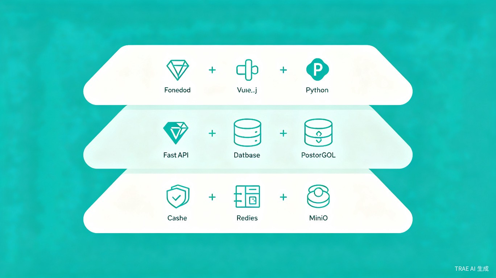

项目概述
本项目是一个面向学校食堂的食材供应链全链路管理平台，旨在解决传统校园食材管理中的信息不透明、追溯困难、多方协作效率低等核心痛点。系统覆盖供应商、学校、教育局三方角色，提供从采购计划、订单管理、入库验收、库存管理到食品追溯、财务结算的完整业务流程。
11
API 模块
4
终端覆盖
3
核心角色
7
Docker 服务
技术栈
后端服务
| 技术 | 版本 | 用途 |
|---|---|---|
| Python | 3.11+ | 编程语言 |
| FastAPI | >=0.115.0 | Web 框架 / API 服务 |
| SQLAlchemy | >=2.0.36 | ORM 数据库操作 |
| Alembic | >=1.14.0 | 数据库迁移 |
| PostgreSQL | 16 | 生产环境数据库 |
| SQLite | - | 开发环境数据库（默认） |
| Redis | 7 | 缓存 / Celery 消息队列 |
| Celery | >=5.4.0 | 异步任务队列 |
| MinIO | latest | 对象存储（文件上传） |
| JWT (python-jose) | >=3.3.0 | Token 认证 |
| Passlib (bcrypt) | >=1.7.4 | 密码哈希 |
| Pydantic | >=2.10.0 | 数据校验与配置管理 |
前端应用
| 技术 | 版本 | 用途 |
|---|---|---|
| Vue.js | 3.5.13 | 前端框架 |
| Vite | 6.0.7 | 构建工具 / 开发服务器 |
| Element Plus | 2.9.1 | UI 组件库 |
| Pinia | 2.3.0 | 状态管理 |
| Vue Router | 4.5.0 | 前端路由 |
| ECharts | 5.5.1 | 数据可视化图表 |
| Axios | 1.7.9 | HTTP 客户端 |
| Playwright | 1.61.0 | E2E 自动化测试 |
桌面端
| 技术 | 版本 | 用途 |
|---|---|---|
| PyQt6 | >=6.8.0 | 跨平台桌面 GUI 框架 |
部署与运维
| 技术 | 版本 | 用途 |
|---|---|---|
| Docker | - | 容器化 |
| Docker Compose | - | 多服务编排 |
| Nginx | alpine | 反向代理 / 静态资源 |
| Uvicorn | >=0.32.0 | ASGI 服务器 |
系统架构

架构分层
用户层
多端统一接入
Web 管理后台（Vue 3）、桌面客户端（PyQt6）、微信小程序、家长查询端，共享同一套 FastAPI 后端服务。
API 网关
Nginx + JWT 认证
Nginx 反向代理，SSL 终止，静态资源服务。JWT Token 认证 + RBAC 角色权限控制。
服务层
FastAPI + Celery
11 个业务模块 RESTful API，异步任务处理，定时调度。Python 3.11 高性能服务。
数据层
PostgreSQL + Redis + MinIO
主数据库存储，Redis 缓存与消息队列，MinIO 对象存储处理文件上传与影像资料。
核心功能模块
系统包含 11 个 API 模块，覆盖食材供应链全流程：
供应商端
- 资质管理：营业执照、食品经营许可证等资质上传与审核
- 订单处理：接收学校采购订单，确认发货
- 电子发票：在线开具与推送电子发票
- 评价考核：学校对供应商进行评分与评价
学校端
- 采购计划：制定周期性采购计划，自动汇总需求
- 入库验收：双人验收机制，影像记录，质检报告上传
- 库存管理：实时库存监控，安全库存预警，自动盘点
- 出库领用：领用申请、审批、出库记录、消耗统计
- 财务报表：自动对账、月度/年度报表、成本分析
教育局端
- 数据汇总：辖区内所有学校采购数据汇总看板
- 安全监管：食品安全事件预警，黑名单管理
- 数据上报：自动生成监管报表，向上级部门报送
全链路追溯
- 追溯码生成：每批次食材生成唯一追溯码
- 全链路追踪：从供应商 -> 配送 -> 验收 -> 入库 -> 出库 -> 餐桌
- 检测报告关联：农残检测、质检报告与食材批次绑定
项目结构
# 项目根目录
school-food-chain/
|-- backend/ # FastAPI 后端服务
| |-- app/
| | |-- main.py # 应用入口，路由注册
| | |-- config.py # 配置管理（pydantic-settings）
| | |-- auth.py # JWT 认证与权限
| | |-- database.py # SQLAlchemy 数据库连接
| | |-- models.py # 数据模型定义
| | |-- routers/ # 11 个业务路由模块
| | |-- schemas.py # Pydantic 数据校验模型
| |-- requirements.txt
|-- web/ # Vue 3 前端管理后台
| |-- src/
| | |-- api/ # Axios 封装与 API 接口
| | |-- views/ # 页面组件
| | |-- stores/ # Pinia 状态管理
| | |-- router/ # Vue Router 路由配置
| |-- package.json
| |-- vite.config.js
|-- desktop/ # PyQt6 桌面客户端
|-- mobile/ # 微信小程序
|-- docs/ # 项目文档
|-- docker-compose.yml # Docker 编排配置
|-- README.md
部署方式
方式一：Docker Compose 一键部署（推荐生产环境）
# 启动所有服务
docker-compose up -d
# 服务清单
- nginx # 反向代理，端口 80/443
- backend # FastAPI 服务，端口 8000
- celery-worker # 异步任务 Worker
- celery-beat # 定时任务调度器
- postgres # PostgreSQL 数据库，端口 5432
- redis # Redis 缓存，端口 6379
- minio # 对象存储，端口 9000/9001
方式二：本地开发环境
# 1. 启动后端
cd backend
pip install -r requirements.txt
uvicorn app.main:app --reload --port 8000
# 2. 启动前端
cd web
npm install
npm run dev
# 3. 访问
Web: http://localhost:5173
API: http://localhost:8000/docs
API 模块一览
| 模块 | 路径 | 功能 |
|---|---|---|
| 认证 | /api/v1/auth | 登录、注册、Token 刷新 |
| 用户 | /api/v1/users | 用户管理、角色权限 |
| 组织 | /api/v1/orgs | 学校/教育局组织架构 |
| 供应商 | /api/v1/suppliers | 供应商资质、评级、黑名单 |
| 食材 | /api/v1/ingredients | 食材分类、规格、库存 |
| 库存 | /api/v1/stock | 入库、出库、盘点 |
| 财务 | /api/v1/finance | 对账、报表、发票 |
| 报表 | /api/v1/reports | 数据统计、库存预警 |
| 追溯 | /api/v1/trace | 追溯码、全链路查询 |
| 审计 | /api/v1/audit | 操作日志、数据变更记录 |
| 教育局监管 | /api/v1/gov | 数据汇总、安全预警 |
测试
项目包含单元测试和端到端测试：
# 后端单元测试
cd backend
pytest
# 前端 E2E 测试（Playwright）
cd web
npx playwright test
开源协议
本项目采用 MIT License 开源协议，允许自由使用、修改和分发。